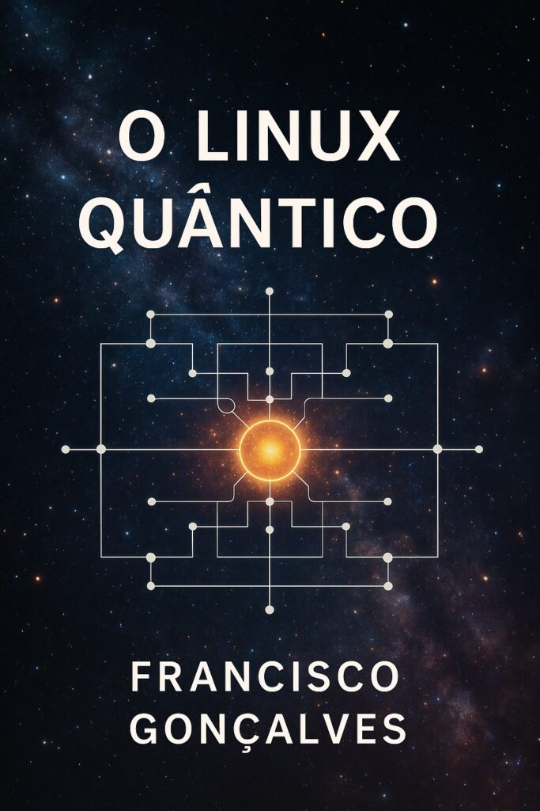

Este não é um manual técnico.
É uma viagem.
Um manifesto poético-tecnológico para os que suspeitam que o universo funciona como um sistema operativo… e que talvez o código esteja à espera de ser lido.
O Linux Quântico nasce da intuição de que a realidade pode ser “hackada” com consciência — que a superposição, o entrelaçamento e o colapso quântico não são apenas propriedades da matéria, mas também metáforas da existência.
Aqui, o programador é também poeta, o terminal é um altar, e o código fonte vibra como um sutra cósmico.
Este livro é um convite a explorar o real como um sistema aberto, dinâmico e profundamente misterioso.
É uma ode ao livre pensamento, à liberdade do código, e à beleza da dúvida.
Francisco Gonçalves
O Linux Quântico é uma obra que entrelaça ciência, filosofia e imaginação.
Inspirado na lógica dos sistemas operativos, explora a ideia de que o universo é um campo de informação em execução, onde o observador participa no código da realidade.
Do kernel à consciência, do comando à criação, este livro convida o leitor a pensar como um programador cósmico — alguém capaz de navegar entre possibilidades, depurar ilusões e reescrever o real.
Descarregue aqui o Livro em PDF com o título " O Linux Quântico" :